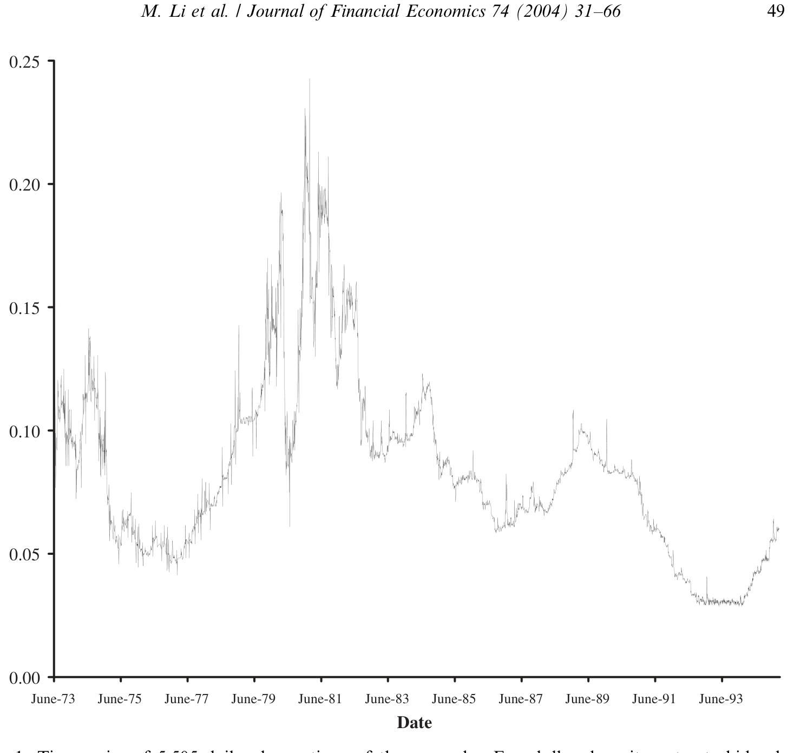
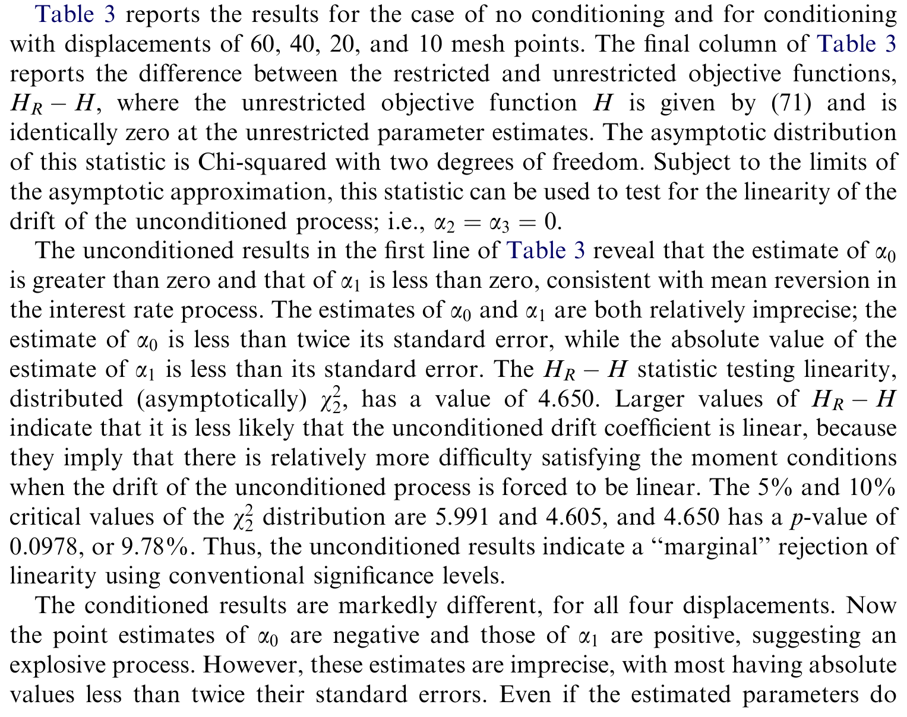
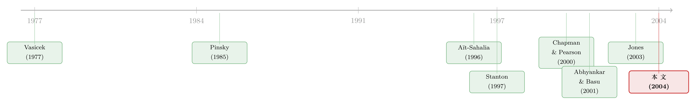

数据从没越过那两条线，利率的漂移却「凭空」弯了
本文读的是 Li, Pearson & Poteshman (2004, Journal of Financial Economics)：当我们从一段有限长度的利率时间序列里去估计扩散过程的漂移时，数据其实「天生」就被条件在了它自己的最小值与最大值之间——而这种我们没意识到的条件化，会凭空制造出一段「非线性」。作者把这种条件化显式地写进广义矩估计 (generalized method of moments, GMM)，结果利率的漂移重新变回近乎线性，一个统计量更是以很大的余地无法拒绝线性。
1 一个吵了十年的问题：利率会不会「拐弯」？
先抛一个悬念。
短期利率（short rate）该怎么建模，是利率衍生品定价的地基。最经典的两块砖——Vasicek (1977) 和 Cox-Ingersoll-Ross (1985)——都假设利率服从一个线性漂移的扩散过程：利率高了就往下拉，低了就往上推，而且这股「拉力」与偏离均衡的距离成正比。漂移是一条直线。
可到了 1990 年代，事情起了变化。Aït-Sahalia (1996) 用非参数方法去「读」美国利率数据，发现漂移根本不是直线：在利率正常的中段，几乎没有什么均值回归；可一旦利率走到很高或很低的极端，那股往回拉的力量会突然变得非常强。Stanton (1997) 用另一套非参数工具，得到了几乎一样的图像。于是「短期利率的漂移是非线性的、在两端急剧均值回归」成了一个被广泛接受的实证事实。（这条线索的另一面，可参见《残差不会撒谎：一把能戳穿利率模型的「万能尺」》与《利率会不会「拐弯」？——一个被换了把尺子量出来的老问题》。）
接着，一个自然的问题被 Chapman and Pearson (2000) 问了出来，问得很扎心：这个非线性，是真的，还是我们自己「估」出来的？
他们做了一个干净的蒙特卡洛实验：先用一个漂移完全线性的扩散过程，人工生成一批利率时间序列；再假装不知道真相，用灵活设定的非参数方法去估计漂移。结果令人不安——估出来的漂移函数，在序列的最大值附近被系统性地低估，在最小值附近被系统性地高估。换句话说，明明真相是直线，估计却画出了一条「两端急剧回拉」的弯线。
非线性是假的。它是一种偏误。
2 为什么有限的样本会「说谎」
这个偏误的来源，其实直觉得让人有点不安。
想一想：在一条时间序列的最高点那一天，下一步会怎么走？必然是往下——因为如果它还能往上，那个更高的点才该是最高点。可底层的数据生成过程并不知道这个「最高」的约束，它本来是有能力在下一步走得更高或更低的。于是，凡是落在样本最大值附近的观测，它们「下一步」的样本，平均而言一定偏低；估计程序看到的，就是一股并不存在的、强烈的向下漂移。对称地，在样本最小值附近，估出来的漂移被向上推。
关键在于：你手里那段数据，之所以是「这段」数据，恰恰因为它没有越过它自己的最大值和最小值。这是一个我们几乎从不言明、却无处不在的条件化。
这个「自我条件化」的幽灵，远不止在利率里作祟。作者一口气点了好几个例子：
- 幸存者偏差。我们只能在「活到今天」的股票市场上估收益过程——也就是条件在「股价没有跌破某个下界」。Brown, Goetzmann and Ross (1995) 证明，这种条件化能严重扭曲对股权溢价、长期自相关、盈余公告后漂移的解读。
- 股利收益率预测收益。股利收益率是个分母里塞着股价的比率。当它在样本里达到最大值（此时股价偏低），股价随后在样本内倾向于回升——哪怕股利收益率和未来收益真的毫无关系。Goetzmann and Jorion (1993) 的自助法模拟正是在「两者无关」的原假设下，复现出了这种虚假的正相关。
- 利差回测。交易员对国债—欧洲美元利差、互换利差、信用利差做回测，历史数据会让利差在高位和低位看起来比真实情况更「爱回归」，于是回测高估了策略的盈利空间。
所有这些，背后是同一道幽灵。而 Chapman-Pearson 只是指出了幽灵的存在；怎么把它赶走，没人给出过可操作的办法。这，就是本文要补上的那一步。
3 真正关键的一步：把「没出界」当成一个可以条件的事件
作者的破题方式，是借用统计学里一支不那么主流、却异常对路的思想——条件频率学派 (conditional frequentist approach)，由 Kiefer (1975, 1976, 1977)、Brownie and Kiefer (1977)、Brown (1978) 系统发展出来。它的基本想法是：把样本空间（比如所有可能的利率路径）切成若干互不相交的子集，然后只在「数据实际落入的那个子集」上，照常做频率学派的推断 (Berger, 1986)。
落到这篇论文里，作者把利率路径的空间一分为二：一类是从头到尾都待在观测到的最小值与最大值之间的路径，另一类是中途冲出过边界的路径。我们手里的数据属于前者，于是就条件在前一类路径上做估计。
这里有个微妙但重要的区分：这种条件化，不等于在最小值、最大值处加上反射壁或吸收壁。反射/吸收壁是「保留这些路径，但把它们改造一下」（撞墙弹回，或撞墙停住）；而本文的条件化是直接把所有触碰过边界的路径删掉，只留下纯粹没出界的那些。它也比贝叶斯的条件化「轻」——贝叶斯条件在观测到的那一条具体路径上，而这里条件在「所有没出界的路径」这一大类上 (Berger et al., 1997)。
与本文最近的，是 Abhyankar and Basu (2001)：他们算出了 Ornstein-Uhlenbeck 与 CIR「平方根」过程在「小于某个常数」条件下的漂移，以及维纳过程被夹在上下界之间时的漂移，发现原本线性的漂移，被条件化弄成了非线性。本文比他们走得更远：它允许未条件化过程的漂移和扩散都用灵活的形式设定，允许条件在「同时夹在上下界之间」这一更一般的事件上，而且整套数值工具可以推广到别的条件化事件。
4 模型：Pinsky 定理与那一项「掰弯漂移」的修正
现在进入数学。别担心，核心就一个式子。
设未条件化的 \(d\) 维、时间齐次的扩散过程为
$$ dx(t) = \mu(x(t))\,dt + \sigma(x(t))\,dB(t), $$
其中 \(\mu\) 是连续的 \(d\) 维漂移向量，\(\sigma\) 是正定的 \(d\times d\) 扩散矩阵，\(B\) 是标准布朗运动向量。当 \(d=1\) 时，这就是一个漂移为 \(\mu\)、扩散系数为 \(\sigma^2\) 的一元扩散。
令 \(G\subset\mathbb{R}^d\) 是一个开、连通、有界的区域；定义事件 \(G(t,T)\) 为「过程从 \(t\) 到 \(T\) 始终待在 \(G\) 内」。再定义生存概率
$$ p(x,t,G(t,T)) \equiv P\big[\,G(t,T)\,\big|\,x(t)=x\,\big], $$
即「现在 \(t\) 时刻处在 \(x\)，未来到 \(T\) 都不出界」的概率。
Pinsky (1985) 的主定理告诉我们：把原过程条件在 \(G(t,T)\) 这个事件上之后，它仍然是一个扩散过程（只是不再时间齐次了），而且它的漂移和扩散有显式形式。这就是全文的引擎：
与之配套的，是扩散矩阵不变这一条：
$$ \sigma(x,t\mid G(t,T))\,\sigma(x,t\mid G(t,T))^{\top} = \sigma(x)\sigma(x)^{\top}. $$
这一点至关重要：条件化只动漂移，不动波动率。所以全文的火力都集中在漂移上。
那条修正项的直觉是什么？\(\nabla p\) 指向「生存概率更高」的方向，也就是区域内部。在上边界附近，越往上走越接近出界、\(p\) 越小，所以 \(\partial p/\partial x<0\)，这一项把条件化后的漂移往下压；在下边界附近 \(\partial p/\partial x>0\)，把漂移往上抬。两端各被掰一下——一条本来笔直的漂移，就这样被弯成了「两端急剧均值回归」的样子。
把这个逻辑反过来用，就是本文的全部要义：我们在数据里看到的，是条件化后的漂移 \(\mu(x,t\mid G)\)；要还原出真正的、未条件化的 \(\mu(x)\)，就得把那条修正项减回去。Aït-Sahalia、Stanton 看到的「非线性」，很可能只是这条修正项的形状。
4.1 生存概率 \(p\) 满足一条抛物型偏微分方程
要把修正项算出来，就得知道 \(p\)。作者证明：把 \(p\) 写成示性函数的期望 \(p(x,t,G(t,T))=E[\mathbf{1}_{G(t,T)}\mid x(t)=x]\)，由 Itô 引理可知过程 \(\{p(x(t),t,G(t,T))\}\) 是一个鞅——而鞅的漂移必须为零。这就逼出了 Kolmogorov 后向方程：
$$ \frac{1}{2}\sum_{j=1}^{d}\sum_{k=1}^{d}\big(\sigma(x)\sigma(x)^{\top}\big)_{jk}\frac{\partial^{2}p}{\partial x_{j}\partial x_{k}} + \mu(x)\cdot\nabla p + \frac{\partial p}{\partial t} = 0, $$
配上边界条件：在空间边界 \(\partial G\) 上 \(p=0\)（碰到边界就「死」），在终端时刻 \(p(x,T,G(t,T))=1\)（撑到最后就「活」）。一元情形下它退化成一条很干净的式子：
$$ \frac{1}{2}\sigma^{2}(x)\frac{\partial^{2}p}{\partial x^{2}} + \mu(x)\frac{\partial p}{\partial x} + \frac{\partial p}{\partial t} = 0. $$
除了极少数特例，这条 PDE 没有解析解，作者用 Crank-Nicholson 有限差分格式在网格 \((a,b)\times[0,T]\) 上数值求解。为了验证数值精度，他们拿几何布朗运动（这一情形他们另推了解析解）来对表：设 \(m=0.05\)、\(\sigma=0.20\)（一个股指的合理参数），把过程关进 \((300,800)\times[0,12]\) 的盒子里，\(\Delta x=1\)、\(\Delta t=1/250\)。结果数值解与解析解几乎完全吻合，绝大部分区域的误差只有 10⁻⁷ 量级；只有在空间边界与终端边界相交的两个角点 $(300,12)$、$(800,12)$ 附近，因为 \(p\) 在那里高度弯曲，误差才放大到 10⁻⁴。
5 真正难的，是从「无穷小一瞬」到「实打实一天」
到这里你可能觉得问题已经解决了——式 (4) 不就给出了漂移吗？
但真正关键的一步在于：式 (4) 给的是无穷小时间 \(dt\) 上的瞬时漂移率。而我们手里的是日度数据，做 GMM 要用的是「过程在一个交易日这一有限区间上的期望变化」。如果条件化后的期望变化随时间近似线性，那直接拿瞬时漂移乘一下就行；可作者发现，恰恰在边界附近，条件化过程的期望变化即便在一天的尺度上也高度非线性——而边界附近正是整个问题的要害。
于是不能偷懒。作者推导出：一个交易日区间 \([t,t+dt]\) 上的条件期望变化向量为
$$ m(x,t,t+dt\mid G(t,T)) = \frac{v(x,t,t+dt\mid G(t,T))}{p(x,t,G(t,T))} - x, $$
其中分子 \(v\) 是另一个由抛物型 PDE 定义的量，需要在 \([t,t+dt]\) 这一短区间上求解；分母 \(p\) 则是前面那条在 \([0,T]\) 长区间上只需解一次的生存概率。算法因此是「两条 PDE 拼起来」：长区间解一次 \(p\)，对数据里每一个时点的短区间各解一次 \(v\)，再用上式组合，得到进入 GMM 矩条件的那个条件期望变化。
这一步有多要紧？作者给了一个触目惊心的数字对照：还是那个几何布朗运动，如果当前水平是 799（贴着上界 800），离条件事件结束还剩四年，那么真正的条件期望变化大约是 $-15$；可如果你偷懒、用「假设漂移在区间内恒定」的欧拉近似去算，得到的是大约 $-40$。差了快三倍。这就是为什么必须老老实实在有限区间上解 PDE，而不能用瞬时漂移凑数。（关于连续时间过程该「多久采一次样」才不至于失真，可参见《一秒一笔的数据，为什么只敢拿 5 分钟用一次？》。）
6 数据与结果：利率的漂移，重新变直了
万事俱备，作者把这套机器开到了真实利率数据上。
数据是 Aït-Sahalia 提供的、一段标准的短期利率时间序列：7 天期欧洲美元存款 (seven-day Eurodollar deposit) 即期利率，5,505 个日度观测。下图就是这段序列——一条在高低之间起伏、但始终被夹在某个区间里的利率路径。正是「始终被夹住」这件事，构成了前文反复强调的那个隐性条件。

Figure 1: Time series of 5,505 daily observations of the seven-day Eurodollar deposit spot rate bid–ask
作者分别做了两件事：不做条件化地估计灵活设定的漂移（复现出文献里那种两端急剧回拉的非线性），以及显式条件在「利率始终待在观测到的最小值与最大值之间」这一事件上重新估计。两条漂移曲线一对比，故事就讲完了。

Table 3: reports the results for the case of no conditioning and for conditioning
如表 3 所示，条件化带来的修正方向，与第 2 节的直觉严丝合缝：它压低了利率低位处的漂移估计、并大幅抬高了利率高位处的漂移估计。两端各被「掰回来」一点，结果就是——条件化后的漂移，比不做条件化时更接近一条直线。作者进一步报告：一个检验以很大的余地无法拒绝未条件化漂移的线性。
于是反转出现了：困扰利率建模十年的「漂移非线性」，在把数据自我条件化这件事老老实实算进去之后，很可能根本不存在。Vasicek 和 CIR 当年那条朴素的直线，也许一直都对。
7 文献脉络
把这条线索捋一遍，会看到一个很漂亮的「正—反—合」。
正题是线性漂移的经典模型：Vasicek (1977)、Cox-Ingersoll-Ross (1985)，以及 Chan, Karolyi, Longstaff and Sanders (1992) 对各种短期利率模型的实证比较。反题是非参数革命：Aït-Sahalia (1996) 与 Stanton (1997) 几乎同时宣告漂移是非线性的，在两端急剧均值回归；Conley, Hansen, Luttmer and Scheinkman (1997)、Pritsker (1998)、Jones (2003) 把这条线推得更远、也更精细。
质疑来自 Chapman and Pearson (2000)：他们用蒙特卡洛证明，从有限样本估漂移，会在极端值附近凭空生出非线性偏误——非线性可能是幻觉。Abhyankar and Basu (2001) 则从理论上确认，线性漂移的过程一旦被条件化，漂移就会变弯。

而本文，正是站在 Chapman-Pearson 与 Abhyankar-Basu 之上的合题：它不止指出幽灵的存在，更借 Pinsky (1985) 的条件扩散定理与一套 GMM 数值工具，把幽灵显式地从估计里剔除——然后告诉你，剔除之后，漂移变直了。
8 评论与延伸（Q&A + 研究方向）
(a) 几个可能的疑问
Q：这种「条件在没出界」的做法，和加吸收壁/反射壁到底差在哪？
差在对路径的处理。吸收壁、反射壁是保留触碰边界的路径、只是改造它们（撞墙停住或弹回）；本文的条件化是直接删除所有曾经触碰过最小值/最大值的路径，只留纯粹没出界的那些。前者改变了过程的局部动力学，后者只是在路径空间上做了一次子集筛选——后者才对应「我们为什么只观测到这段数据」的真实机制。
Q：把数据条件在它自己的最小值和最大值上，会不会是一种「用数据猜数据」的循环论证？
这正是条件频率学派要回答的。作者强调，他们的条件化比贝叶斯「轻」：贝叶斯条件在观测到的那一条具体路径上，而这里只条件在「所有待在 min 和 max 之间」这一大类路径上，用到的仅是数据的两个极值特征。它确实用了数据的信息，但用得克制，逻辑上是自洽的——前提是你接受条件频率学派的推断框架。
Q：结论是「漂移其实是线性的」，那是不是说 Aït-Sahalia、Stanton 都错了？
不必这么强。本文说的是：他们看到的非线性，至少有相当一部分可以由条件化偏误解释，以至于一个检验无法拒绝线性。这不等于证明真相一定是线性，只是把「非线性」从「被数据强烈支持」降级为「无法与线性区分」。负担因此被反转给了主张非线性的一方。
Q：为什么强调「扩散矩阵不受条件化影响」？
因为这是 Pinsky 定理一个非常干净的结论（式 5）：条件化只通过生存概率的梯度修正漂移，波动率结构原封不动。这让问题大大简化——全部注意力可以集中在漂移上，波动率的估计不必为条件化操心。
Q：那个 $-15$ 对 $-40$ 的例子，到底想说明什么？
想说明「不能用瞬时漂移乘以时间步长来近似一天的期望变化」。在边界附近，条件化过程的期望变化在一天之内就高度弯曲，欧拉式的「漂移恒定」近似会把 $-15$ 的真实变化算成 $-40$，误差近三倍。这是作者坚持要在有限区间上解第二条 PDE（而非图省事）的根本理由。
Q：这套方法只能用于「夹在上下界之间」吗？
不。作者反复说明，数值工具针对「待在上下界之间」做了具体实现，但理论框架（第 2 节）适用于任意开、连通、有界区域 \(G\) 上的条件化；改换条件事件，只需相应修改边界条件即可。他们在早期版本里就演示过另外两种条件事件。
(b) 几个可能的研究问题与提案
1. 把条件化偏误搬到公司债利差的回测里。 【经济故事】作者明确点名：交易员对信用利差、互换利差做回测，历史数据会让利差在高低位看起来比真实更爱回归，从而高估策略盈利。这正是条件化偏误，却几乎没人在信用市场里量化过它。 【可行性】中。所需数据为 TRACE 公司债成交或 CDS 利差的长时序；识别上可直接套用本文的两条-PDE 框架，把利差当成被夹在样本 min/max 间的一元扩散，比较条件化前后的「均值回归速度」估计。难点是利差常有跳跃，纯扩散设定需要稳健性检验。
2. 外资持有占比的「持续性」里，有多少是条件化幻觉？ 【经济故事】跨国资本流动研究常估计「外资持仓占比」的均值回归速度，而这个比率天然被夹在 0 与 1 之间——一个被边界约束的过程。我们观测到的强均值回归，可能部分是边界条件化的产物。 【可行性】中。需要国别×时间的外资持仓面板（如 EPFR 或各国托管数据）；可把占比做 logit 变换后当扩散过程，用本文方法剥离边界效应。识别清晰，但占比序列频率偏低，有限样本下 PDE 数值精度需谨慎。
3. 流动性度量的「极端值回拉」是真信号还是估计偏误？ 【经济故事】买卖价差、Amihud 非流动性等指标在危机时冲到极值后会快速回落，常被解读为「流动性的均值回归」。但这些指标在样本里也被自己的极值条件化，回拉的一部分可能是幻觉。 【可行性】高。日度流动性度量数据可得性好、样本长；直接复用本文框架即可。能干净地把「真实回拉」与「条件化偏误」分开，对流动性危机的解读有直接含义。（与《差点死掉的那个市场：一场公司债流动性危机的微观解剖》的主题天然相关。）
4. 把条件化框架推广到带跳跃的过程。 【经济故事】本文整套机器建立在纯扩散之上，但利率、利差都有明显跳跃。一旦允许跳跃，「触碰边界」的概率结构会变，Pinsky 型修正项也需要重写。 【可行性】低到中。理论上要把后向方程换成带积分项的偏微分-积分方程 (PIDE)，数值上更重；但若能做成，适用面会大大拓宽。属于「值得但不轻松」的方向。
9 我的判断
这是一篇漂亮的方法论文。它的贡献不在于发现了一个新事实，而在于把一个早被指出、却一直停留在「警告」层面的偏误（Chapman-Pearson 的蒙特卡洛），第一次变成了可操作的估计工具：借 Pinsky 定理给出条件扩散的解析结构，再用两条拼接的 PDE 把有限区间上的条件期望变化算到能进 GMM 的精度。逻辑链条干净，数值验证（与几何布朗运动解析解对到 10⁻⁷）也让人放心。
但我对识别有两点保留。其一，整个结论严重依赖「纯扩散」这一设定——若真实利率含跳跃，「触碰边界」的含义和修正项都会变，而利率跳跃在实证上并不少见。其二，「条件在样本 min/max 之间」这个事件本身是用实现的数据定义的，作者已尽力论证它比贝叶斯条件化更轻，但这终究引入了一层对极值的依赖，极值又恰恰是有限样本里最不稳定的统计量；不同样本窗口下结论的稳健性，值得更系统地展示。
我接下来最想看到的，是把这套框架推到信用利差与流动性度量上去——那里条件化偏误的故事，作者自己都点了名，却还没人认真算过一遍。如果在公司债市场里也能把「极端值的急剧回拉」拆出一块「纯属条件化幻觉」，那对无数依赖均值回归的回测和定价模型，都会是一记不轻的提醒。
参考文献
Abhyankar, A., Basu, D. (2001). Does conditioning information matter in estimating continuous time interest rate diffusions? Journal of Financial and Quantitative Analysis 36, 335–344.
Aït-Sahalia, Y. (1996). Testing continuous-time models of the spot interest rate. Review of Financial Studies 9, 385–426.
Berger, J. O. (1986). Commentary. In: Jack Carl Kiefer Collected Papers: Supplementary Volume. Springer, New York, pp. 48–56.
Brown, L. D. (1978). A contribution to Kiefer's theory of conditional confidence procedures. Annals of Statistics 6, 59–71.
Brown, S. J., Goetzmann, W. N., Ross, S. A. (1995). Survival. Journal of Finance 50, 853–873.
Chan, K. C., Karolyi, A., Longstaff, F. A., Sanders, A. B. (1992). An empirical comparison of alternative models of the short-term interest rate. Journal of Finance 47, 1209–1227.
Chapman, D. A., Pearson, N. D. (2000). Is the short rate drift actually nonlinear? Journal of Finance 55, 355–388.
Cox, J. C., Ingersoll, J., Ross, S. A. (1985). A theory of the term structure of interest rates. Econometrica 53, 385–407.
Goetzmann, W., Jorion, P. (1993). Testing the predictive power of dividend yields. Journal of Finance 48, 663–679.
Jones, C. S. (2003). Nonlinear mean reversion in the short-term interest rate. Review of Financial Studies 16, 793–843.
Li, M., Pearson, N. D., Poteshman, A. M. (2004). Conditional estimation of diffusion processes. Journal of Financial Economics 74(1), 31–66.
Pinsky, R. G. (1985). On the convergence of diffusion processes conditioned to remain in a bounded region for large time to limiting positive recurrent diffusion processes. The Annals of Probability 13, 363–378.
Stanton, R. (1997). A nonparametric model of term structure dynamics. Journal of Finance 52, 1973–2002.
Vasicek, O. (1977). An equilibrium characterization of the term structure. Journal of Financial Economics 5, 177–188.